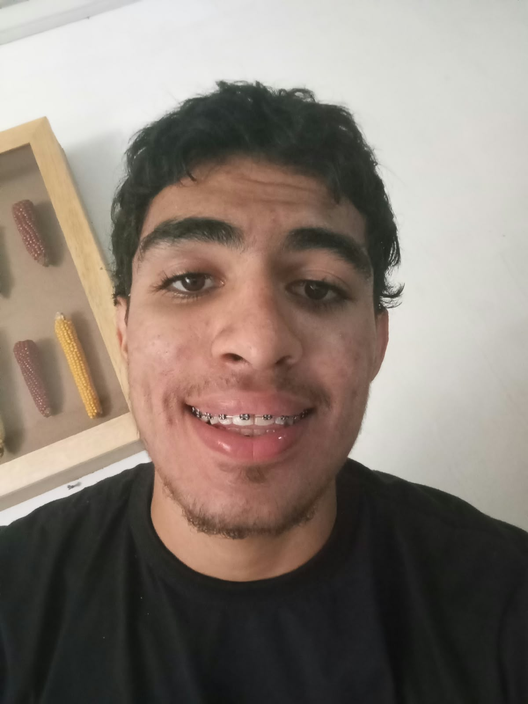
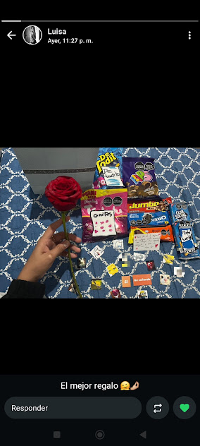
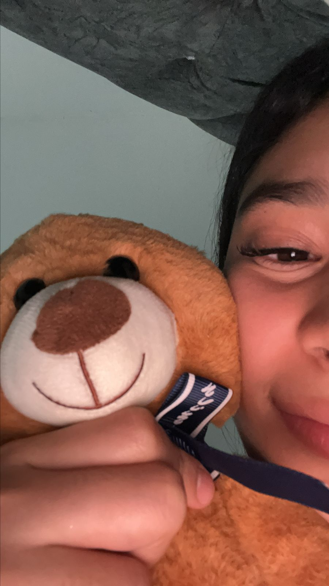
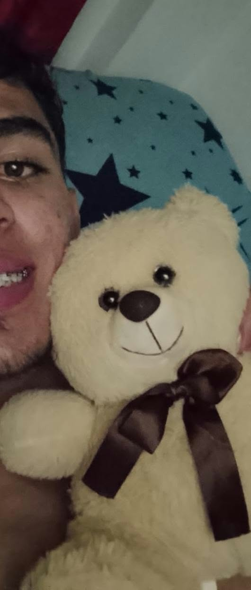
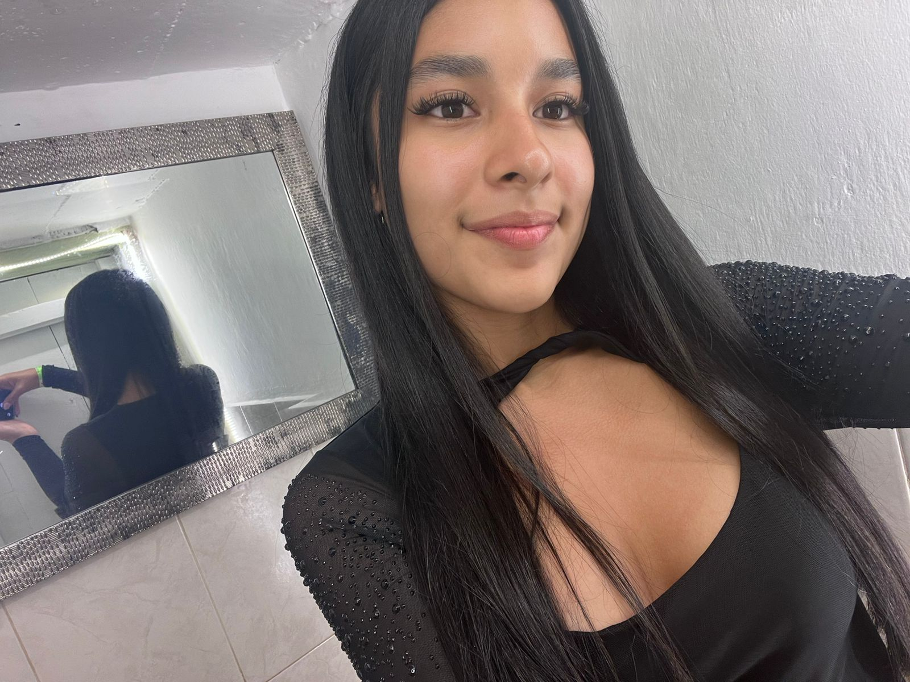

CON CARIÑO - TU OJITOS LINDOS
Algunas personas dejan huellas para siempre
Aunque ya no estemos juntos, tú eres ese pedazo que le hace falta a mi corazón.
Recordar nuestra historiaUNA COINCIDENCIA
Nuestra historia
¡Cómo pasa el tiempo! Hace ayer que estábamos comenzando nuestra historia y hace hoy que se siente como si estuviera en una cuerda floja a punto de caer al abismo, pero entender que todo en la vida es un aprendizaje. Los errores que cometemos hoy, mañana ya no los volvemos a cometer. Aunque tuvimos peleas, tuvimos días felices, etc., seguíamos avanzando e insistiendo en que sí funcionaría, pero ¿cuál fue ese impulso que logró que lo nuestro terminara? Pues es algo de otro planeta, porque ni en mil vidas podrían quitar la conexión que hubo entre dos almas totalmente diferentes, con destinos y caminos diferentes. No creas que esto es IA, por cierto. -- I LOVE YOU --.
Tal vez las cosas no salieron como alguna vez imaginamos, pero eso no significa que lo vivido haya perdido su valor. Cada momento tuvo su significado. Como también existe aquella posibilidad de arreglar y organizar un futuro. Siempre quise tener la del proceso, aunque es complicado porque es complejo, pero así como dicen: "Trabaja hoy para disfrutar luego el resto de tu vida", frase que marca, motiva e inspira. Estamos en una etapa en donde somos indecisos, donde dependemos de la más mínima cosa que pase en nuestras vidas. Por ello, creé esta página para ti. Para que sepas que la llama del amor no se ha apagado.
MOMENTOS ESPECIALES
Algunos recuerdos
Cada fotografía tiene un valor único que tú y yo sabemos cómo se sintió.

Un momento para recordar ❤️
FAMILIA
Árbol genealógico



SANTIAGO & LUISANGELA
EN EL MUELLE DE SAN BLAS
Y si esperar es de locos, entonces seré el hombre más loco en este mundo.
SANTIAGO X LUISANGELA
LUISANGELA X SANTIAGO
LUISANGELA
Una carta para ti
No quería dejar pasar la oportunidad de expresar lo que significó esta etapa.
Gracias por los momentos compartidos, por las experiencias y por cada recuerdo que hoy forma parte de mi historia.
No escribo estas palabras para cambiar el pasado ni para pedirte nada. Simplemente quería que supieras que hubo cosas bonitas que siempre voy a recordar con cariño. ATT: Ojitos lindos
Con cariño ❤️
Los recuerdos permanecen
Gracias por haber sido parte de una historia que siempre tendrá un lugar en mi memoria, pero la pregunta es: ¿Habrá otra oportunidad?...
❤️